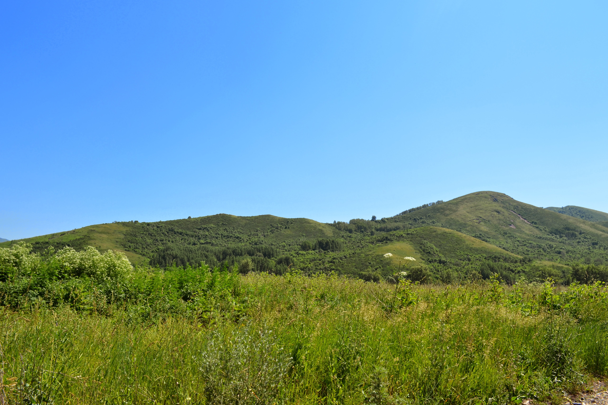

Новости Тарханки скоро появятся здесь
В этом разделе будут публиковаться последние события и новости нашего села.
Все новости →Портал родного села

Здесь мы собираем историю нашего села, рассказываем о людях, событиях и местах, которые дороги его жителям.
В этом разделе будут публиковаться последние события и новости нашего села.
Все новости →Здесь жители смогут размещать объявления о продаже, покупке, услугах, работе и других важных вещах.
Все объявления →Здесь появятся фотографии нашего села и его жителей.
Открыть фотоархив →Жители Тарханки смогут самостоятельно предлагать новости, фотографии и объявления.